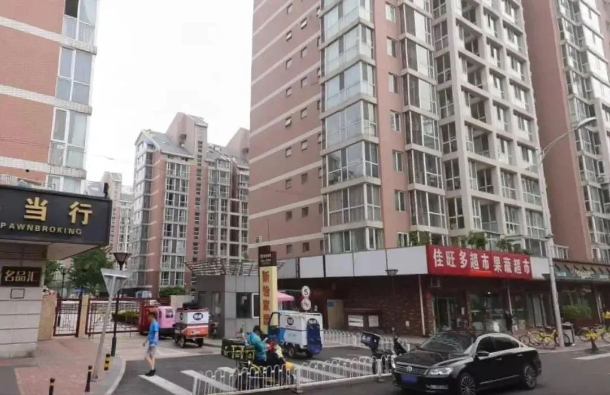

作家方方：疫情看上去稳定，但人心似不太稳（57）-作家方方-财新博客-新世纪的常识传播者-财新网
原文链接 备份链接 3月21日。 封城第59天。这么长时间了！ 昨天那么大的太阳，今天突然就阴了。下午还下了点雨。这时节的春雨，对于院子里的树以及花，都还是很需要的。前两三天，武大樱花盛开，树下空荡无人，估计是记者拍了一些照片，同学群里便 …

黄女士及其家人是如何“顺利完成进京全流程”的？当前是否存在更多的“黄女士”？这些令人疑惑的问题，有待一天之内即迅速成立的三个调查组，还公众合理合法的结论。
文 | 王仲昀 Anne
2月26日，北京发布的一例由武汉返京的确诊病例引发广泛关注。根据北京市东城区新怡家园社区居委会发布的确诊病例提示，2月24日，该社区出现一名新冠肺炎确诊案例，该名女士2月22日从武汉来京，18日在武汉曾有过发热症状。目前3名密切接触者已被隔离。
随后，北京市疾控中心具体介绍了这一病例情况：黄女士，2月18日开始间断性发热5天，伴咽部不适，当时居住地为武汉。黄女士2月22日凌晨2：00由其北京家属自驾车到京，经体温筛查后入住其家属所在的东城区新怡家园小区。2月23日19点，黄女士因发热由急救车转运至医院排查。2月24日被确认为新冠肺炎确诊病例。
相信很多人和笔者一样，看到这则新闻的第一反应是充满疑惑：离汉通道早在一个月前业已关闭。在严格管控的情况下，已经出现发热症状的黄女士，是如何自驾出武汉城，又是如何一路回到北京的？

新怡家园小区北门 图源 | 长安街知事
系刑满释放人员，曾涉及湖北水利贪腐案件
黄女士回京并被确诊的消息在网上传播后，关于她身份的讨论就此而生。有网友称，这名黄女士系国美电器创办人黄光裕的二妹、家族二号人物黄燕虹，曾任国美集团监察中心总监等职。对此，湖北省监狱管理局一名工作人员对此进行了否认。
该工作人员明确表示，从武汉回京的黄女士不叫黄燕虹，也并非原国美电器高层管理人员。同时，关于黄女士到底是谁这一问题，也逐渐被披露。26日晚播出的央视《新闻1+1》节目中，主持人白岩松提到，黄女士是刑满释放人员。
根据当年的判决文书，现在能够知道，这名黄女士于1959年1月8日出生于湖北省建始县，大专文化程度，原系宣恩县水利水产局财务股副股长兼出纳，住湖北省宣恩县。
裁判文书显示，原宣恩水利水产局副局长易某富、出纳黄某英、会计夏某艳身为国家工作人员，利用职务上的便利，大肆侵吞国家财产，易某富共计贪污公款481893元，个人分得217791元；黄某英共计贪污公款721720元，个人分得365120元；夏某艳共计贪污公款353200元，个人分得176600元。其行为均构成贪污罪。
2013年6月21日，湖北省宣恩县法院判决被告人黄某英犯贪污罪，判处有期徒刑十年，并处没收财产6万元。被告人黄某英不服提出上诉，恩施中院于2014年2月18日驳回上诉，维持原判。恩施中级法院2014年3月20日的官博也证实，恩施州宣恩县水利水产局“窝案”二审完结。
服刑期间，黄某英两次获减刑。据湖北武汉市中级法院(2017)鄂01刑更2371号刑事裁定书显示，2017年9月黄某英获减刑7个月，2019年8月黄某英再获武汉中院裁定减刑8个月。至此，其刑期自2011年4月18日起至2020年2月17日止。黄某英便是此事中的黄女士。
2月27日下午，黄女士的辩护律师接受采访时表示，黄某英的原户籍在湖北宣恩县，“她在恩施人脉很广，原单位的小金库就是她管的。她家境不错，有三套房。她的丈夫身体瘫痪后在2013年病退了，两人处于分居状态”。另外，黄女士的代理律师介绍称，黄某英“在恩施被关了两年多”，2014年二审判决生效后被送到武汉女子监狱服刑。
该辩护律师表示，黄某英的女儿覃某在北京从事销售土特产的工作，这次由覃某等家属到武汉女子监狱去接黄某英回京。
看到“武汉女子监狱”，让人不难联想到几天前的新闻。湖北此前曾通报3所监狱发生新冠肺炎疫情，其中就有武汉女子监狱。2月11日，该监狱为230例，2天之后，确诊数增加到279人。目前，监狱长周裕坤已被免职。

疑问重重，亟待厘清
综合财新、新京报、红星新闻披露的一些细节，黄女士在北京入驻的小区是位于北京市崇文门商圈的新怡家园小区，北京二环边上，距离天安门直线距离不到3公里。
该小区建成于2004-2006年，是北京南城当时为数不多的高档楼盘，位于北京繁华的崇文门商圈。新怡家园小区共有8栋低密度住宅楼，均为南北朝向，多为100平方米以上的户型，开盘时均价在2万元/平方米。
对此，黄女士的辩护律师表示：“她经济条件好，出事之前就给女儿在北京买了房。”
26日下午，武汉女子监狱工作人员回应媒体，该监狱近期未释放犯人，目前犯人都处于留滞状态。
也就是说，黄女士是刑满释放人员，但是否一定是从武汉女子监狱被放出来的呢？需等待进一步官方通报的确认。
从武汉到北京，1000多公里，开车至少要用14个小时，2月22日凌晨2点由家属驾车从武汉接到北京的黄女士，应该是在2月21日中午12点前就从武汉出发了。
通报信息显示，2月18日，黄女士就曾经有过发烧症状，早于出发时间。不过，家属接受媒体采访时表示，“我们被欺瞒了。”黄女士的一位亲属称，黄女士刑满释放后，他们接到监狱通知，对方要求去接人，但并未提黄女士发烧的事情。“我们做的事情，既是合理的，也是合法的。我们没有做任何过分的事情。” “他（监狱人士）一直让我们把人接走，但是他瞒报了监狱情况，我不知道我们接回来这多大的危险。”
在从武汉开回北京的路上，黄女士的亲属得知了武汉女子监狱发生疫情的消息。
到北京的当天中午，家属即向社区报告，东城区疾控中心将黄女士和家属带走集中隔离，2月24日黄女士确诊新冠肺炎后，她在家中的其他家属也被带走隔离。
27日下午，黄某某的女儿覃某发声：“我相信司法部会给出一个公正的调查结果。”

目前真相未明，而根据业已知晓的情况，以下疑问，想必如鲠在喉，令民众不吐不快，不得不问：
1. 黄女士家属回到北京后的表现，似乎挺配合。但他们知不知道何谓“封城”？“封城”两个字最直白的含义懂吗？监狱让他们把人接走，他们就赶紧把人接走了——这可是从“武汉”接人，还一接就接到首都去了……
2. 2月18日，黄女士就曾经有过发烧症状，早于出发时间。家属声称被监狱欺瞒了，不管放人的是不是武汉女子监狱，纵然狱方“未提发烧的事”，可在出发之前黄女士便有过发烧症状了，家属怎么就“忽视”了呢？纯属巧合？苦心谋划？
3. 如何离开武汉，又怎样回到北京，黄女士家属未做说明。武汉封城严防输出，北京死守滴水不漏，一路关卡重重，他们究竟何以能做到在发热的情况下“突出重围，来去自如”的？这，是最大的一个问号。
4. 疫情期间，武汉及湖北刑满释放人员的去留问题也因此事引起广泛关注。若刑满释放人员不是当地的，怎么办？怎么解决其临时安置问题？
5. 还有没有更多“自由自在”的“黄女士”？
一天之内，三个调查组成立
在当前防控疫情关键时期，又是在疫情依旧严峻的武汉，为何发生这样一起事件，自然迅速成为人们非常关心的问题。换言之，在这个时间节点上，这件事不查清楚，不给公众一个明确交代，肯定不行。
为此，一天之内，三个调查组便迅速成立。2月26日，经中央政法委批准，司法部牵头，由分管副部长刘志强带队，会同中央政法委、最高人民检察院、公安部组成联合调查组，赴湖北就武汉女子监狱一名刑满释放人员感染新冠肺炎到京事件进行调查。
北京市纪委市监委也于2020年2月26日成立调查组，工作重点围绕黄某某如何进京、如何进社区开展调查，核查疫情防控工作全过程是否存在漏洞。
同样，2月26日深夜，湖北日报发布消息，针对26日网传一名刑满释放新冠肺炎确诊人员离汉抵京的有关情况，湖北省委书记应勇作出批示：在疫情防控最吃劲的关键阶段，竟发生此类严重违反离汉离鄂通道管控的事件，绝不能允许。要迅速查清事实，依纪依法严肃处理，及时回应社会关切。此事还是否涉及其他违法违纪问题，也要彻查。不论涉及到谁，都要一查到底。离汉离鄂通道管控事关全国疫情防控大局，要坚持“全国一盘棋”，吸取教训，举一反三，切实把各项管控措施落到实处。
湖北省已成立由省纪委监委牵头，省委政法委、省检察院、省公安厅、省司法厅组成的联合调查组，立即开展调查工作。

诸多令人疑惑的问题，三个调查组将还公众一个合理合法的结论。

征集令
《新民周刊》现面向全国征集新冠肺炎采访对象和真实故事：
如果你是参与抗击新冠肺炎疫情的医护人员或其家属，我们希望聆听你的“战疫”故事，也希望传达你的诉求。
如果你是确诊、疑似患者本人或家属，我们希望了解你和家人如何“抗疫”的过程，让外界了解你的真实经历。
如果你是疫情严重地区的普通市民，我们希望展现你的乐观，并倾听你所需的帮助。
如果你是公共服务人员或各类捐助者，我们希望看到你的“最美逆行”，记录下你的无私。
……
抗击新冠肺炎疫情，我们诚征对疫情了解的社会各界人士，提供相关线索，说出你的故事，让我们用新闻留存这一切。
《新民周刊》新冠肺炎线索征集值班编辑联系方式（添加时请简要自我介绍）：
周一：应 琛 微信号：paulineying0127
周二：金 姬 微信号：gepetta
周三：黄 祺 微信号：shewen-2020
周四：周 洁 微信号：asyouasyou
周五：孔冰欣 微信号：kbx875055141
周六：吴 雪 微信号：shyshine1105
周日：姜浩峰 微信号：jianggeladandong
✳如你需要捐赠物资，可与以下两位工作人员联系:王勇：WangYong-SH 吴轶君：rommy150708（添加时请注明“捐物资”，方便工作人员快速通过您的申请，谢谢。）
新闻是历史的底稿，你们是历史的见证者。期待你的故事、你的线索！

▼
大家还都在看这些
▼
新民周刊所有平台稿件， 未经正式授权
一律不得转载、出版、改编或进行
与新民周刊版权相关的其他行为，违者必究


原文链接 备份链接 3月21日。 封城第59天。这么长时间了！ 昨天那么大的太阳，今天突然就阴了。下午还下了点雨。这时节的春雨，对于院子里的树以及花，都还是很需要的。前两三天，武大樱花盛开，树下空荡无人，估计是记者拍了一些照片，同学群里便 …
原文链接 备份链接 这是一种全新的病毒，还有很多未知。它代表了一种演进的公共卫生突发事件，我们还会在其他国家看到更多确诊病例。中国对传染病以及卫生突发事件的诊断、治疗和管理能力在过去20年得到了显著的提升。 文 |《财经》记者 江玮 发自 …
原文链接 备份链接 7610 来源：正和岛 作者：叶青 02-28 1、数字 27日，农历二月初五。阴冷。小雨。27日，全国新增确诊病例327例，新增死亡病例44例（湖北41例，北京2例，新疆生产建设兵团1例），新增疑似病例452例。截 …
原文链接 备份链接 大家好，我是田静。 疫情严控之下，昨天又被一则新闻震惊到：北京东城确诊一女子，刚从武汉来的北京！ 武汉封城那么严格，正常人滞留武汉都无法出来，有的只能捡垃圾吃，她一名正在发烧的患者，是如何突破城防的呢？ 再看后面媒体挖 …
原文链接 备份链接 原标题：复盘疫情决策：医生、疾控、科研、行政分别做了什么 2月6日下午，一辆运送医疗设备和工作人员的车辆抵达武汉火神山医院。摄影/长江日报 陈卓 1月8日晚，作为中国疾病预防控制中心（CDC）首席流行病学家，曾光突然接 …